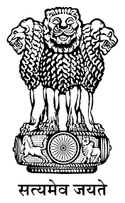
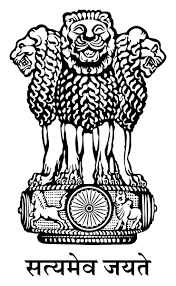
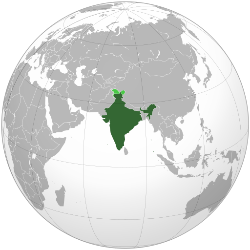

¡Haz fotografias sobre tu cultura local, ayuda a Wikipedia y gana!
India
República de la India भारत गणराज्य (hindi) Bhārat Gaṇarājya Republic of India (inglés)
 

Himno: জন গন মন Jana Gana Mana (en bengalí: ‘El espíritu de todo el pueblo’)2
Canción nacional: বন্দে মাতরম্ Vande Mātaram (en bengalí: «Yo te alabo, Madre»)

Capital : Nueva Delhi
28°36′50″N 77°12′32″E
La India,9 oficialmente República de la India (en hindi, भारत गणराज्य, Bhārat Gaṇarājya; en inglés, Republic of India), es un país soberano ubicado en Asia del Sur. Con sus 1357 millones de habitantes (estimación de 2022), es el segundo país del mundo por población.10 Su superficie es de 3 287 263 km²,3 lo cual lo ubica en el séptimo lugar entre los países más extensos del planeta.4 Limita con el océano Índico al sur, con el mar arábigo al oeste y con el golfo de Bengala al este, a lo largo de una línea costera de más de 7517 kilómetros.11 La India también limita con Pakistán al oeste;12 al norte con China, Nepal y Bután y al este con Bangladés y Birmania. Además, India está ubicada cerca de las islas de Sri Lanka, Maldivas e Indonesia. Su capital es Nueva Delhi y su ciudad más poblada es Bombay.
Hogar de la cultura del valle del Indo13 y una región histórica por sus rutas comerciales y grandes imperios, el subcontinente indio fue identificado por su riqueza cultural y comercial en la mayor parte de su larga historia. Cuatro de las religiones más importantes del mundo, el hinduismo, el budismo, el jainismo y el sijismo, se originaron allí, mientras que otras religiones como el zoroastrismo, el judaísmo, el cristianismo y el islam llegaron durante el I milenio, dando forma a diversas culturas de la región.Gradualmente anexada por la Compañía Británica de las Indias Orientales desde principios del siglo xviii y colonizada por el Reino Unido desde mediados del siglo xix, la India se convirtió en una nación independiente en 1947, tras una lucha por la independencia que estuvo marcada por un movimiento de no violencia, liderada por Mahatma Gandhi.14
La India es una república federal4 compuesta por 28 estados y ocho territorios de la Unión15 con un sistema de democracia parlamentaria.4 En 2017, la economía india es la tercera más grande del mundo y la sexta en términos de PIB nominal. Las reformas económicas de 1991 la han transformado en una de las economías de más rápido crecimiento;16 sin embargo, todavía sufre de problemas como los altos niveles de pobreza, analfabetismo,17 pandemias, malnutrición y constantes violaciones de los derechos de las mujeres. En 2016, el 10 % más rico de la población posee el 55 % del ingreso nacional.18 Además de una sociedad plural en lo religioso, multilingüe y multiétnica, la India también alberga una flora y fauna diversas en diferentes hábitats protegidos.Además, la República de la India es uno de los diez países que poseen un arsenal nuclear y no es signataria del Tratado de No Proliferación Nuclear, dado que, en sus actuales términos, no le permitiría mantener su armamento atómico. La India pasó del puesto 140 al 177 entre 2016 y 2018 en el Índice de Desempeño Ambiental compilado por investigadores de las universidades de Yale y Columbia. En particular, el estudio destaca el "alarmante" deterioro de la calidad del aire.19La India se caracteriza por una gran desigualdad social. El 1% más rico de la población gana más del 20% de la renta nacional total en 2021, mientras que el 50% más pobre solo gana el 13% de la renta nacional total. India se encuentra actualmente entre los países más desiguales del mundo, según el ''Informe sobre la Desigualdad Mundial 2022'', que califica a India de ''país pobre y muy desigual con una élite rica''.20